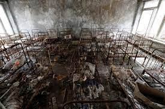
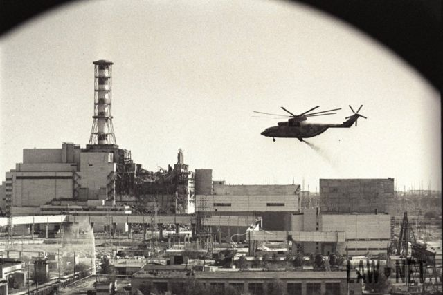

Lugares Turisticos
El turismo en Chernobil
Los registros oficiales indican que hubo menos de 50 muertos; muchos eran bomberos a los que enviaron a luchar contra las llamas en la planta de energía.
Sin embargo, en Ucrania, así como en Belarús y algunas partes de Rusia, se atribuyen al accidente los defectos congénitos y el cáncer de tiroides.
En algunos estudios se relacionan unos 1,800 casos de cáncer de tiroides en niños con el accidente de Chernobyl.
Los efectos del desastre en la salud mental de los ucranianos y los habitantes de otros países también están dándose a conocer.
Se cree que la estigmatización de la población local y la reubicación de comunidades es la causa de la depresión y algunos problemas sociales.

| 
| 
| 
|